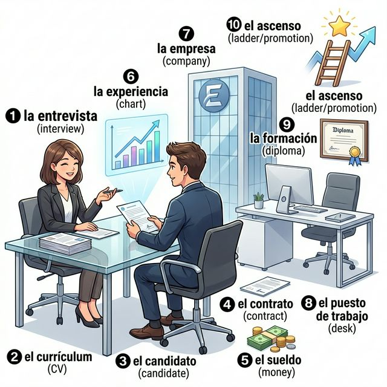

Cervantes: §7 Trabajo: 실전 비즈니스 어휘, 이력서 및 면접 표현
Mi futuro profesional (나의 전문적인 미래)
A2 단계에서의 '일'은 단순한 직업 명칭을 넘어, 자신의 경력을 관리하고 새로운 기회를 찾는 과정에 집중합니다. 어떻게 하면 나를 효과적으로 소개하고, 면접에서 당당하게 질문에 답할 수 있을까요? 이번 장에서는 이력서(CV) 작성에 필요한 어휘와 면접에서 쓰이는 실전 표현들을 배웁니다. 또한 과거의 업무 경험을 설명하기 위해 단순과거와 불완료과거를 적절히 섞어 사용하는 법을 익힙니다. 여러분의 꿈이 현실이 되는 과정을 스페인어로 그려봅시다.
학습 목표
- 이력서, 면접, 고용 계약 등 고급 비즈니스 어휘 15개 이상 습득
- 과거 업무 경험 설명을 위한 시제(단순과거/불완료과거) 활용법 복습
- 구인 광고 이해 및 면접 질문에 대한 답변 전략 수립
- 스페인의 채용 프로세스와 링크드인 등 전문 네트워크 활용 이해
성공적인 취업을 위한 채용 과정의 핵심 요소들입니다. 이미지 속의 면접 장면과 함께 어휘를 익혀보세요.

| # | Spanish | English Bridge | Korean Tip |
|---|---|---|---|
| 1 | la entrevista | Interview ✅ | 면접 |
| 2 | el currículum / el CV | Curriculum ✅ | 이력서 |
| 3 | el candidato / la candidata | Candidate ✅ | 지원자 / 후보자 |
| 4 | el contrato | Contract ✅ | 계약(서) |
| 5 | el sueldo / el salario | Salary ✅ | 급여 / 월급 |
| 6 | la experiencia | Experience ✅ | 경력 / 경험 |
| 7 | la empresa / la compañía | Company ✅ | 회사 / 기업 |
| 8 | el puesto de trabajo | Post (job post) | 직책 / 자리 |
| 9 | la formación | Formation (training) | 학력 / 교육 이수 |
| 10 | el ascenso | Ascent (climbing up) | 승진 |
✅ 표시된 단어는 영어와 어원의 뿌리가 같은 'Cognates'입니다.
면접관의 질문에 답하거나 자신의 경력을 설명할 때 유용한 표현들입니다.
A. 면접관의 질문 (Preguntas del entrevistador)
- ¿Por qué quiere trabajar con nosotros? (Why do you want to work with us? / 왜 우리 회사와 일하고 싶으신가요?)
- Hábleme de su experiencia laboral. (Tell me about your work experience. / 본인의 업무 경력에 대해 말씀해 주세요.)
- ¿Cuáles son sus mayores fortalezas? (What are your greatest strengths? / 본인의 가장 큰 강점은 무엇인가요?)
B. 자신의 경력 설명하기 (Describir la trayectoria)
- Trabajé tres años en una multinacional. (I worked for three years in a multinational. / 저는 다국적 기업에서 3년 동안 일했습니다.)
- Tengo mucha experiencia en ventas. (I have a lot of experience in sales. / 저는 영업 분야에 많은 경험이 있습니다.)
- Soy una persona responsable y creativa. (I am a responsible and creative person. / 저는 책임감 있고 창의적인 사람입니다.)
- Busco un puesto con más responsabilidad. (I am looking for a position with more responsibility. / 더 많은 책임감이 있는 직책을 찾고 있습니다.)
과거의 업무 경험을 입체적으로 표현하기 위해 시제를 조화롭게 사용하는 법을 익혀봅시다.
이력서의 '경력 사항'에는 보통 단순과거를, 면접에서 당시의 분위기나 일상적인 업무 루틴을 설명할 때는 불완료과거를 주로 사용합니다.
Korean Tip!
"나는 ~를 전공했다"라고 할 때 영어로는 "I majored in..."이라고 하지만, 스페인어에서는 estudiar 동사를 써서 "Estudié [전공명]" 또는 "Soy licenciado en [전공명]" 스타일로 표현합니다.
스페인의 채용 시장과 기업 문화의 특징을 알아봅시다.
En los últimos años, el mercado laboral español ha experimentado grandes cambios hacia la digitalización. Plataformas como LinkedIn son esenciales para encontrar empleo en las grandes ciudades. Sin embargo, el contacto personal (networking) sigue siendo muy influyente en España; a menudo, las recomendaciones personales abren puertas que los anuncios públicos no pueden.
Un aspecto importante es el horario intensivo durante el verano, donde muchas empresas permiten trabajar de 8:00 a 15:00 para disfrutar de las tardes calurosas. Además, las relaciones entre jefe y empleado tienden a ser más horizontales y cercanas que en otros países de Europa del Norte, fomentando un ambiente de trabajo más social y comunicativo.
[한국어 번역]
최근 몇 년 동안 스페인 노동 시장은 디지털화와 함께 큰 변화를 겪었습니다. 링크드인(LinkedIn)과 같은 플랫폼은 대도시에서 일자리를 찾는 데 필수적입니다. 하지만 스페인에서는 여전히 개인적인 인맥(네트워킹)이 매우 영향력이 큽니다. 종종 개인적인 추천이 공개된 공고가 할 수 없는 기회의 문을 열어주기도 합니다.
중요한 특징 중 하나는 여름 동안의 집중 근무제(horario intensivo)인데, 많은 기업들이 더운 오후를 즐길 수 있도록 오전 8시부터 오후 3시까지만 근무하는 것을 허용합니다. 또한, 상사와 직원 사이의 관계는 북유럽 국가들에 비해 더 수평적이고 친근한 경향이 있어, 더 사교적이고 소통이 활발한 업무 분위기를 조성합니다.
A. CV Vocabulary Checklist (이력서 어휘 체크리스트 - 알맞은 의미를 연결하세요)
| Spanish | Korean |
|---|---|
| 1. Datos personales | a. 경력 사항 |
| 2. Experiencia laboral | b. 인적 사항 |
| 3. Formación académica | c. 언어 능력 |
| 4. Idiomas | d. 기타 기술 |
| 5. Otros datos de interés | e. 학력 사항 |
B. Fill in the blanks with the correct past tense (알맞은 과거 시제를 사용하세요)
C. 번역 연습 (면접 상황에 맞는 문장을 만드세요)
Cómo prepararse para una entrevista (면접 준비 방법)
Para tener éxito en una entrevista en España, la preparación es clave. Primero, debes investigar la empresa y entender sus valores. Es importante vestir de forma adecuada según el puesto de trabajo. Durante la entrevista, sé puntual y mantén el contacto visual. Cuando hables de tu experiencia, sé específico: explica qué hiciste y qué resultados lograste. No olvides hacer preguntas al final, como "¿Cuál es el siguiente paso en el proceso?". Recuerda que la actitud positiva y la confianza son tan importantes como tu formación académica. ¡Mucha suerte!
Questions:
1. 면접에서 성공하기 위해 가장 먼저 해야 할 일은 무엇인가요? (What is the first thing to do to succeed?)
- ............................................................
2. 대화 중 태도에 대해 어떤 조언을 하고 있나요? (What advice is given about attitude/behavior?)
- ............................................................
[한국어 번역]
스페인에서 면접에 성공하기 위해서는 준비가 핵심입니다. 첫째, 기업을 조사하고 그들의 가치를 이해해야 합니다. 직책에 맞게 적절한 옷차림을 하는 것이 중요합니다. 면접 동안 시간을 엄수하고 시선을 맞추세요. 본인의 경력에 대해 말할 때 구체적으로 하세요. 무엇을 했고 어떤 결과를 얻었는지 설명하세요. 마지막에 "채용 과정의 다음 단계는 무엇인가요?"와 같은 질문을 하는 것을 잊지 마세요. 긍정적인 태도와 자신감은 여러분의 학력만큼이나 중요하다는 것을 기억하세요. 행운을 빕니다!
La Entrevista de Selección (채용 면접)
Situación: El Sr. Martínez entrevista a Sofía para un puesto de Coordinadora de Proyectos.
상황: 마르티네스 씨가 프로젝트 코디네이터 직책을 위해 소피아를 면접합니다.
| Spanish | Korean |
|---|---|
| Sr. Martínez: Buenos días, Sofía. Cuéntame, ¿por qué te interesa este puesto? | 마르티네스: 좋은 아침입니다, 소피아. 왜 이 자리에 관심이 있는지 말씀해 보시겠어요? |
| Sofía: Buenos días. Me interesa porque su empresa es líder en innovación y quiero aplicar mi experiencia. | 소피아: 안녕하세요. 귀사가 혁신의 리더이고 제 경험을 적용하고 싶기 때문입니다. |
| Sr. Martínez: Veo en tu CV 분야가 마케팅이네요. 무엇을 배웠나요? | 마르티네스: CV를 보니 마케팅 분야군요. 무엇을 배웠나요? |
| Sofía: Sí, en mi último trabajo aprendí a gestionar equipos y a trabajar bajo presión. | 소피아: 네, 전 직장에서 팀 관리와 압박 속에서 일하는 법을 배웠습니다. |
| Sr. Martínez: ¿Qué horarios prefieres? | 마르티네스: 어떤 근무 시간대를 선호하시나요? |
| Sofía: Soy flexible, pero prefiero el horario intensivo si es posible. | 소피아: 유연합니다만, 가능하다면 집중 근무제를 선호합니다. |
| Sr. Martínez: Muy bien. Te llamaremos la próxima semana. | 마르티네스: 좋습니다. 다음 주에 연락드리겠습니다. |
이번 장의 핵심 내용을 복습해 보세요.
- [ ] 이력서와 면접에 필요한 고급 어휘 10개 이상을 익혔나요?
- [ ] 단순과거와 불완료과거를 업무 경력 설명에 맞게 사용할 수 있나요?
- [ ] 면접관의 질문에 답하는 기본적인 패턴을 연습했나요?
- [ ] 스페인의 집중 근무제(horario intensivo)와 네트워킹 문화를 이해했나요?
¡Enhorabuena! 비즈니스 스페인어의 세계에 발을 내디딘 것을 축하합니다. 단순히 일하는 것을 넘어 자신의 가치를 증명하고 소통하는 법을 배우는 것은 매우 큰 자산입니다. 이번 장에서 배운 표현들이 여러분의 커리어에 날개가 되기를 바랍니다. 다음 장에서는 우리가 살고 있는 지구와 사회적 책임에 대해 다루는 '지구촌과 경제(A2)' 섹션으로 이어가겠습니다. 성장은 계속됩니다! ¡Adelante!
6. Práctica - A. CV Vocabulary Checklist
1-b / 2-a / 3-e / 4-c / 5-d
6. Práctica - B. Fill in the blanks with the correct past tense
1. hice / 2. era / 3. Viví / 4. llegaba / 5. tuve
6. Práctica - C. 번역 연습
1. Aprendí a comunicarme en una multinacional.
2. Cada día asistía a una reunión matutina.
3. He solicitado el puesto porque busco nuevos retos. (또는 me presento...)
4. Sé hablar inglés y español.
5. Ayer firmé el contrato después de la entrevista.
7. Lectura Questions
1. 기업 조사 및 가치 이해 (Investigar la empresa y entender sus valores).
2. 긍정적인 태도와 자신감을 유지하고 시선을 맞추기 (Mantener actitud positiva, confianza y contacto visual).